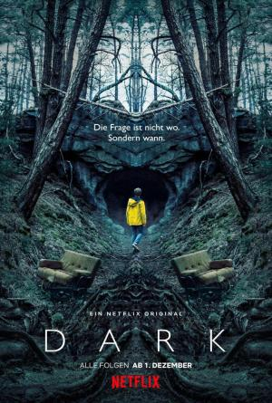

Dark |
||
|---|---|---|
|  | Sinopsis: Tras la desaparición de un joven, cuatro familias desesperadas tratan de entender lo ocurrido a medida que van desvelando un retorcido misterio que abarca tres décadas... Saga familiar con un giro sobrenatural, "Dark" se sitúa en un pueblo alemán, donde dos misteriosas desapariciones dejan al descubierto las dobles vidas y las relaciones resquebrajadas entre estas cuatro familias. |
Director:Baran bo Odar Reparto:Louis Hofmann, Anna König, Roland Wolf Año: 2017 Duracion:60 min cada capitulo Pais:Alemania |
Criticas Profesionales:Leonardo D’Espósito"Lo interesante es que uno nunca sabe para qué lado va a ir el episodio siguiente, y la serie lo logra sin traicionar al espectador ni pistas falsas, con personajes que siempre son humanos y creíbles |
Trailer |
Obtener:AlquilarComprar |
Registrate/Iniciar Sesion